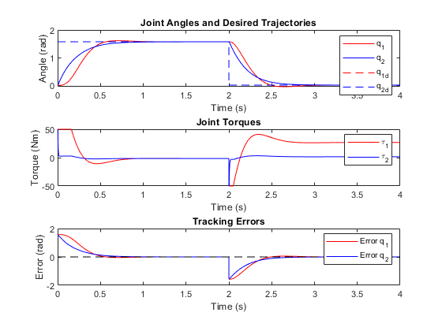

tspan = [0 4];
x0 = [0; 0; 0; 0];
function qd = desired_trajectory(t)
if t < 2
qd = [pi/2; pi/2];
else
qd = [0; 0];
end
end
function xdot = robot_dynamics(t, x, para)
q1 = x(1); q1dot = x(2); q2 = x(3); q2dot = x(4);
qd = desired_trajectory(t);
q1d = qd(1);
q2d = qd(2);
D = zeros(2, 2);
D(1,1) = para.m1*para.lc1^2 + para.m2*(para.l1^2 + para.lc2^2 + 2*para.l1*para.lc2*cos(q2)) + para.I1 + para.I2;
D(1,2) = para.m2*(para.lc2^2 + para.l1*para.lc2*cos(q2)) + para.I2;
D(2,1) = D(1,2);
D(2,2) = para.m2*para.lc2^2 + para.I2;
C = zeros(2, 2);
C(1, 1) = -para.m2*para.l1*para.lc2*sin(q2)*q2dot;
C(1, 2) = -para.m2*para.l1*para.lc2*sin(q2)*(q1dot + q2dot);
C(2, 1) = para.m2*para.l1*para.lc2*sin(q2)*q1dot;
C(2, 2) = 0;
N = zeros(2, 1);
N(1) = para.m1*para.g*para.lc1*cos(q1) + para.m2*para.g*(para.l1*cos(q1) + para.lc2*cos(q1 + q2));
N(2) = para.m2*para.g*para.lc2*cos(q1 + q2);
tau = zeros(2, 1);
tau(1) = para.Kp1*(q1d - q1) - para.Kd1*q1dot + N(1);
tau(2) = para.Kp2*(q2d - q2) - para.Kd2*q2dot + N(2);
tau(1) = max(min(tau(1), 50), -50);
tau(2) = max(min(tau(2), 50), -50);
a = tau - C * [q1dot; q2dot] - N;
qddot = D \ a;
xdot = [q1dot; qddot(1); q2dot; qddot(2)];
end
para.m1 = 7.848;
para.m2 = 4.49;
para.l1 = 0.3;
para.lc1 = 0.1554;
para.lc2 = 0.0341;
para.I1 = 0.176;
para.I2 = 0.0411;
para.g = 9.81;
para.Kp1 = 50;
para.Kp2 = 50;
para.Kd1 = 10;
para.Kd2 = 10;
[t, x] = ode45(@(t,x) robot_dynamics(t, x, para), tspan, x0);
tau1 = zeros(length(t), 1);
tau2 = zeros(length(t), 1);
tracking_error_q1 = zeros(length(t), 1);
tracking_error_q2 = zeros(length(t), 1);
for i = 1:length(t)
qd = desired_trajectory(t(i));
q1d = qd(1);
q2d = qd(2);
q1 = x(i, 1);
q1dot = x(i, 2);
q2 = x(i, 3);
q2dot = x(i, 4);
N1 = para.m1*para.g*para.lc1*cos(q1) + para.m2*para.g*(para.l1*cos(q1) + para.lc2*cos(q1 + q2));
N2 = para.m2*para.g*para.lc2*cos(q1 + q2);
tau1(i) = para.Kp1 * (q1d - q1) - para.Kd1 * q1dot + N1;
tau2(i) = para.Kp2 * (q2d - q2) - para.Kd2 * q2dot + N2;
tau1(i) = max(min(tau1(i), 50), -50);
tau2(i) = max(min(tau2(i), 50), -50);
tracking_error_q1(i) = q1d - q1;
tracking_error_q2(i) = q2d - q2;
end
figure;
subplot(3, 1, 1);
plot(t, x(:, 1), 'r', t, x(:, 3), 'b');
hold on;
qd_plot = arrayfun(@desired_trajectory, t, 'UniformOutput', false);
qd1 = cellfun(@(qd) qd(1), qd_plot);
qd2 = cellfun(@(qd) qd(2), qd_plot);
plot(t, qd1, '--r', t, qd2, '--b');
hold off;
title('Joint Angles and Desired Trajectories');
xlabel('Time (s)');
ylabel('Angle (rad)');
legend('q_1', 'q_2', 'q_{1d}', 'q_{2d}');
subplot(3, 1, 2);
plot(t, tau1, 'r', t, tau2, 'b');
title('Joint Torques');
xlabel('Time (s)');
ylabel('Torque (Nm)');
legend('\tau_1', '\tau_2');
ylim([-50 50]);
subplot(3, 1, 3);
plot(t, tracking_error_q1, 'r', t, tracking_error_q2, 'b');
hold on;
plot(t, zeros(size(t)), '--k');
hold off;
title('Tracking Errors');
xlabel('Time (s)');
ylabel('Error (rad)');
legend('Error q_1', 'Error q_2');
disp('1. Joint Angles and Desired Trajectories:');
disp(' - The second controller (with gravity compensation) shows closer alignment');
disp(' between q1, q2 and the desired trajectories q1d, q2d.');
disp(' - The first controller exhibits larger deviations from the desired trajectories,');
disp(' particularly in the presence of significant gravitational forces.');
disp(' ');
disp('2. Joint Torques:');
disp(' - The second controller produces lower and smoother torques (tau1, tau2)');
disp(' due to gravity compensation.');
disp(' - The first controller requires higher and more variable torques to overcome');
disp(' unmodeled gravitational forces.');
disp(' ');
disp('3. Tracking Errors:');
disp(' - The second controller results in smaller tracking errors and faster convergence');
disp(' to zero, compensating for gravitational forces.');
disp(' - The first controller shows larger tracking errors and slower convergence,');
disp(' particularly when gravitational forces are significant.');
1. Joint Angles and Desired Trajectories:
- The second controller (with gravity compensation) shows closer alignment
between q1, q2 and the desired trajectories q1d, q2d.
- The first controller exhibits larger deviations from the desired trajectories,
particularly in the presence of significant gravitational forces.
2. Joint Torques:
- The second controller produces lower and smoother torques (tau1, tau2)
due to gravity compensation.
- The first controller requires higher and more variable torques to overcome
unmodeled gravitational forces.
3. Tracking Errors:
- The second controller results in smaller tracking errors and faster convergence
to zero, compensating for gravitational forces.
- The first controller shows larger tracking errors and slower convergence,
particularly when gravitational forces are significant.
